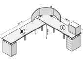
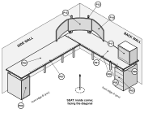
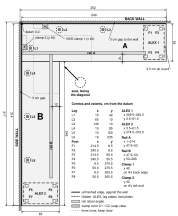

Assembly manual

| Footprint | 2490 × 3140 mm |
|---|---|
| Surface height | 830 mm |
| Tops | A along the back wall, B along the side wall (two IKEA EKBACKEN 2490 × 650 × 28) |
| Floor needed | 2520 × 3170 mm, including the 30 mm wall gaps |
All dimensions in millimetres. The rails are hidden under the front edges and are drawn dashed.

| No. | Part | No. | Part |
|---|---|---|---|
| P01 | Top A, EKBACKEN 2490 x 650 x 28 | P07 | Rail B, steel angle 2130 |
| P02 | Top B, EKBACKEN 2490 x 650 x 28 | P09 | Round adjustable foot 4 in x 8 |
| P03 | ALEX 1, drawer unit 360 x 580 x 700 | P12 | VIVO STAND-V300CU |
| P04 | ALEX 2, storage unit with door 360 x 580 x 700 | P13 | Samsung Odyssey G5 32 in |
| P05 | OLOV leg x 6, 105 mm plate | P14 | Acer XZ320QU x 2 |
| P06 | Rail A, steel angle 2130 | P17 | HYTE Y60 on printed pedestal |
Two IKEA kitchen tops make an L. Top A lies along the back wall and keeps the corner square; top B lies along the side wall and its end butts against top A's front edge. Each top stands 30 mm off its wall, with its square, unfinished long edge toward the wall. The far end of each top rests on an ALEX cabinet through four adjustable feet: the feet are screwed to the top, and their pads drop into printed rings on the cabinet, so the desk cannot slide on the cabinets and the two heavy boxes hold the whole frame square. Six OLOV legs stand along the two wall edges, none at the front, so the space under the inside corner is open for your knees.
That leaves the two front edges with nothing under them for more than two metres, so each one is carried by a steel angle rail screwed to the underside 120 mm back from the front edge. Under the inside corner the two rails are bolted together with two gusseted steel fittings, so the corner of top B hangs from rail A. The rails never touch a cabinet: their ends load the top, and the top loads the nearest feet. The monitor stand clamps to top A's two wall edges, 400 mm from the corner; the surface is 830 mm above the floor.

| Height above the floor | mm | Confidence |
|---|---|---|
| Top surface | 830 | SOURCE-DEFINED |
| Underside of the tops (OLOV setting) | 802 | SOURCE-DEFINED |
| Rail lower edge | 751 | SOURCE-DEFINED |
| ALEX top (the feet stand on it, 102 below the underside) | 700 | ASSUMPTION / FIELD CHECK measure your units |